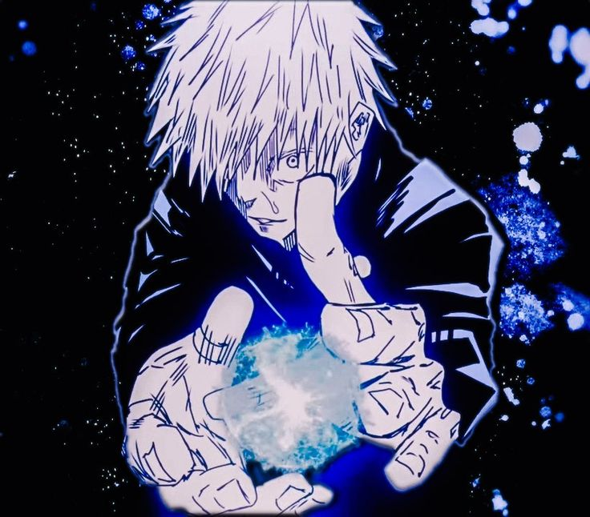

Azul passa a sensacao de controle total do espaco. E uma tecnica que puxa tudo ao redor e cria um efeito visual muito marcante, mostrando que o Gojo nao vence apenas pela forca bruta. O jeito como ele usa isso sem dificuldade nenhuma aumenta ainda mais aquela confianca irritante que faz parte da personalidade dele.